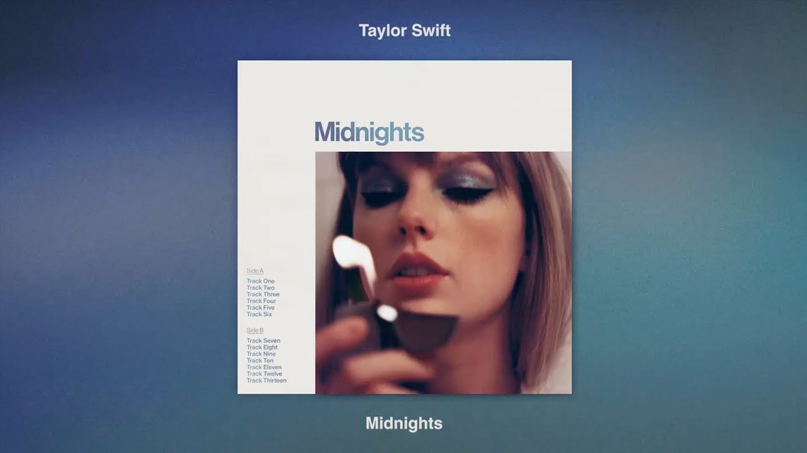

Hello, Meet me at midnights

อะไรที่ทำให้คุณตื่นในยามค่ำคืน ?
มันคือชั่วขณะหนึ่งของความว้าวุ่นใจ เสี้ยวความคิดเพียงเล็กน้อย กลับกลายเป็นความสงสัยประกายไฟที่จุดเชื้อเพลิงแห่งความลุ่มหลง และในตอนนี้มันย้อนกลับไปไม่ได้แล้ว เปลวไฟได้ลุกลาม และคุณก็ตาสว่าง
บางทีมันอาจจะเป็นคำถามนั้นที่คุณควรถามออกไปให้เร็วด้วยความตั้งใจที่จะถามคนคนนั้นเมื่อหลายปีมาแล้วแต่ก็ไม่ได้ทำ คนคนนั้นที่เล็ดลอดเข้ามาในอดีตของคุณและตอนนี้พวกเขาก็ได้จากไปไกลแสนไกล บรรดาเรือผีทั้งหลายที่ผ่านมาและก็ผ่านไป แต่ ณ ชั่วโมงนี้ มันเทียบท่าอยู่ที่ท่าเรือของคุณ จอดอยู่พร้อมกับธงที่ปลิวไสว สดใส งดงาม และมันเกือบจะเหมือนจริง
บางครั้งการหลับใหลก็เป็นการหนีปัญหาได้เท่า ๆ กับความสงบสุขของจิตใจ มันไม่น่าประหลาดใจหรอกหรือกับการเปลี่ยนไปเปลี่ยนมาระหว่าง ‘การรักตัวเอง’ กับ ‘การเกลียดชังตัวเอง’ ที่รวดเร็วปานนี้ บางครั้งชีวิตของคุณนั้นดูเหมือนท้องฟ้าที่แจ่มใส เต็มไปด้วยดวงดาวส่องประกายแวววับ ต่อม เมฆหมอกก็เข้ามาปกคลุม ทันใดนั้นเอง คุณอยู่ในเมืองที่คุณเคยจากมาเมื่อหลายปีก่อน ต้นไม้ในวัยเด็กกับเสียงสะท้อนของภาพหลอนของการหัวเราะจนท้องแข็งของคุณ และรอยถักของเชือกที่ห้อยชิงช้าจากล้อยางเก่ายังคงแขวนอยู่บนกิ่งไม้ ทุกเบอร์โทรศัพท์ที่คุณยังจดจำเจ้าของได้ดีแต่ก็ไม่เคยโทรไปอีกเลย โฉมหน้าของเด็กหนุ่มที่เศร้าโศกเสียใจในขณะที่เขารีบขับรถออกจากหน้าบ้านคุณ คือชายที่รักครอบครัวของเขาในวันนี้ พวกเขาจะคิดกับคุณยังไงกันนะ
ทำไมคุณถึงนอนไม่หลับกันล่ะ? บางทีคุณคงตาสว่างจากอาฟเตอร์ช็อกของการตกหลุมรักอย่างหัวปักหัวปำในสายสัมพันธ์ที่รู้สึกเหมือนเหตุมหันตภัยบางอย่างที่เหนือจริง เช่น ความสับสนอลหม่านที่เกิดขึ้นเองตามธรรมชาติ หรือการได้เห็นหิมะตกลงบนชายหาดทางเขตร้อน ห้วงหมอกแห่งความหลงใหลที่ให้ความรู้สึกประหนึ่งโดนคลื่นซัด
หรือนี่เป็นคืนที่คุณตระหนักได้ถึงความโดดเดี่ยวเดียวดายที่คุณมีมากขนาดไหน ไม่ว่าคุณจะพยายามตะเกี่ยตะกายอย่างไร แต่ยิ่งสูงก็ยิ่งหนาวเท่านั้น
บางค่ำคืน คุณเดินออกไปและตื่นเต้นกับกระแสไฟ – นักผจญภัยออกแสวงหาความตื่นเต้นเร้าใจ เสียงเพลงดังประโคมจากลำโพง และความบ้าบิ่นในการเต้นรำกับคนแปลกหน้าอย่างใกล้ชิด บางอย่างในห้องที่มืดสลัวทำให้คุณรู้สึกเปล่งประกายอีกครั้ง ในค่ำคืนเหล่านี้ คุณรู้ว่ามีเพียงใบหน้าของคุณที่ส่องสว่างในความมืด
ชั่วโมงนี้แล้วทำไมคุณยังไม่นอนล่ะ ? เพราะคุณกำลังสวมบทนางแค้นในจินตนาการ ที่คนเลว ๆ ถูกนำตัวออกมาโดยใส่กุญแจมือ และคุณก็ยืนดูมันเกิดขึ้น คุณหัวเราะอยู่ที่หน้ากระจก จิบไวน์แดงไปพร้อมด่าพรึมพรำ คุณดูเหมือนคนป่วยจิตจริง ๆ
บางทีคุณกำลังพยายามที่จะบงการเรื่องราวของหัวใจอีกครั้ง คุณเพิ่งจะหลงทางไปกับสิ่งที่วกเวียนอยู่ในหัวของคุณ ที่ที่ความกลัวห่อหุ้มกรงเล็บของมันเอาไว้รอบ ๆ คอหอยที่บอบบางของคนที่เป็นรักแท้ คุณจะช่วยเขาได้ทันเวลาไหม ? แต่ช่วยเขาจากใครกัน ? แหม…ชัดเจนว่า จากคุณ
เราข่มตาไม่ลงในยามค่ำคืนกับความรักและความกลัว ความสับสนวุ่นวายและน้ำตา เราจ้องมองไปยังกำแพงและดื่มจนกระทั่งมันพูดโต้ตอบกับเรา เราบิดเบี้ยวด้วยกรงขังที่เราสร้างขึ้นมาเองและอธิษฐานว่าไม่ควรสร้างมัน –ในนาทีนี้– ที่กำลังจะทำผิดพลาดที่เปลี่ยนแปลงชีวิต นี่คืออัลบั้มที่รวบรวมเพลงที่ถูกแต่งขึ้นในช่วงกลางดึก การผจญภัยผ่านความหวาดกลัวและฝันหวาน พื้นที่เราก้าวเดินและปีศาจที่เราเผชิญ สำหรับพวกเราทุกคนที่ต้องพลิกตัวไปมาเพราะนอนไม่หลับ กระสับกระส่าย และตัดสินใจจะปล่อยให้แสงไฟในโคมไฟมันเปิดไว้ และออกตามหา ด้วยหวังที่ว่าบางที เมื่อเข็มนาฬิกาหยุดอยู่ที่เลข 12… เราจะได้พบเจอกับตัวเอง
แล้วพบกัน ณ เวลาเที่ยงคืนตรง, เทย์เลอร์